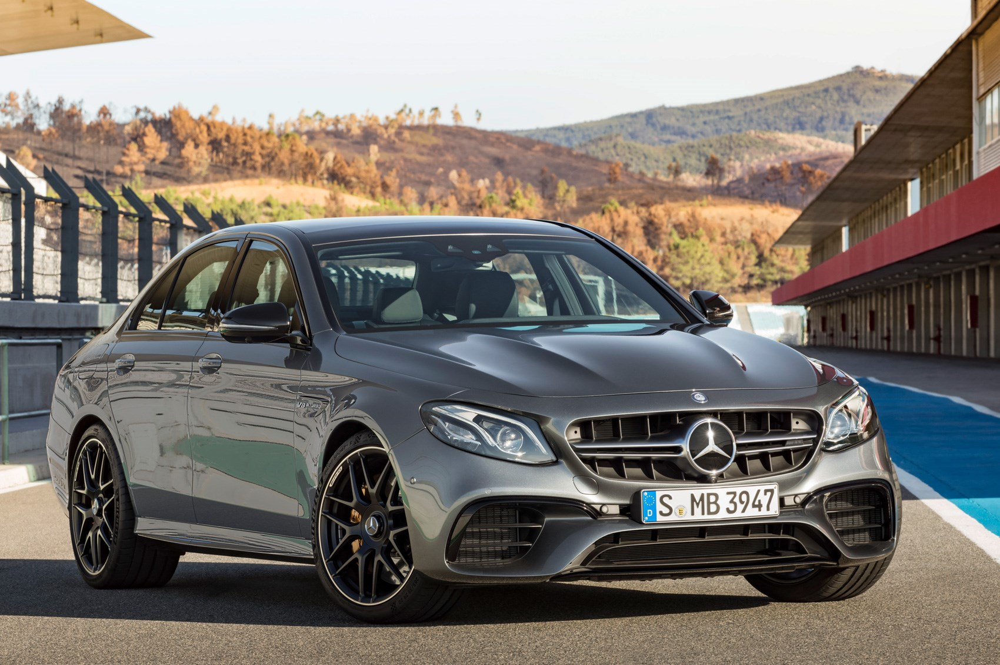
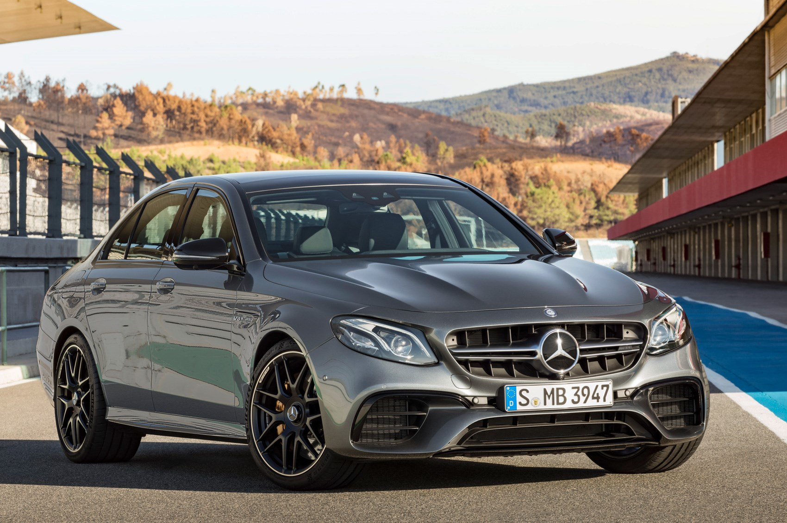
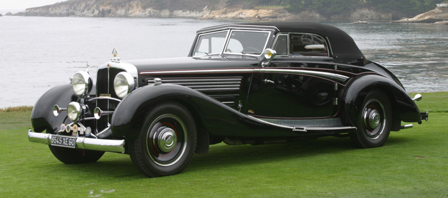
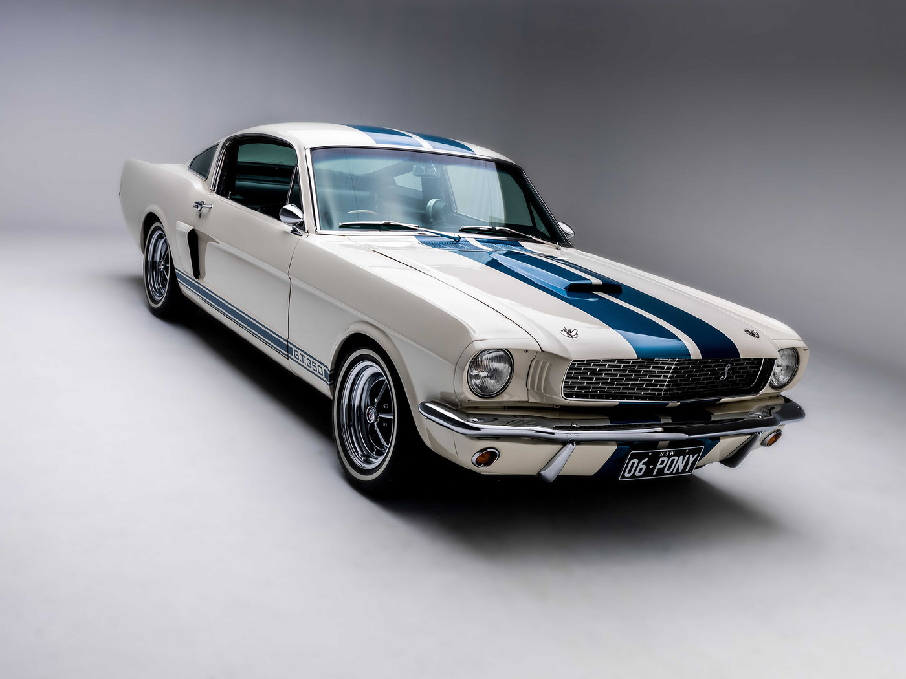
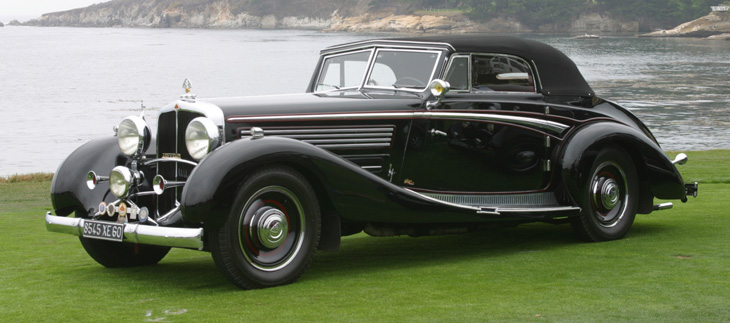
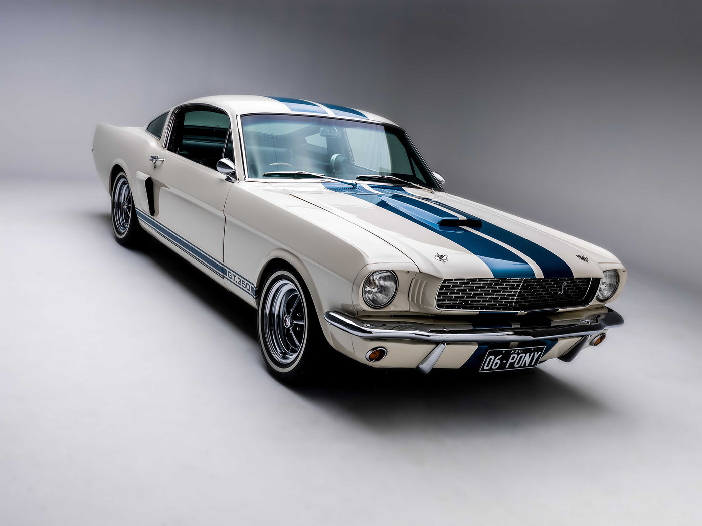

Top Gear
- Jeremy Clarckson
- Richard Hammond


Automobile designers will be showing new car designs and will take a look on new concepts, including BMW, Mercedes, and Lamborghini.
Live feed episode of Top Gear with the two famous broadcasters: Jermey Clarkson, and Richard Hammond. They will present a special comparison between super cars from different countries.
The most fun day, where test drives will be open for everybody, DJ Teisto will take on the stage and get everyone up to dance. Most importantly, the Dodge Viper real car experiance.
Supercars are exotic cars, and that means they have great style, as well as incredible performance. These cars are among the fastest in the world, and have the best sport handling out there. A supercar has a certain mystique associated with it.
Image result for luxury cars description Luxury vehicle makers may either be stand-alone companies in their own right, such as BMW and Mercedes-Benz, or a division/subsidiary of a mass market automaker (e.g., Lexus is part of Toyota).
A vintage car is, in the most general sense, an old automobile, and in the narrower senses of car enthusiasts and collectors, it is a car from the period of 1919 to 1930.

 
   
 